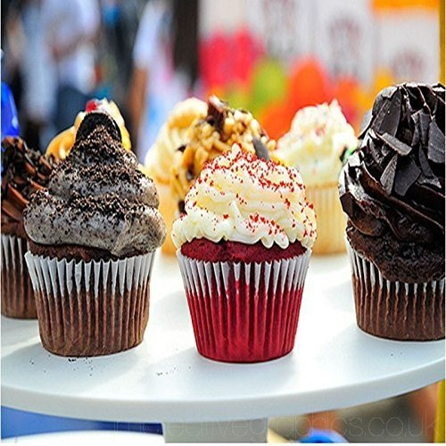
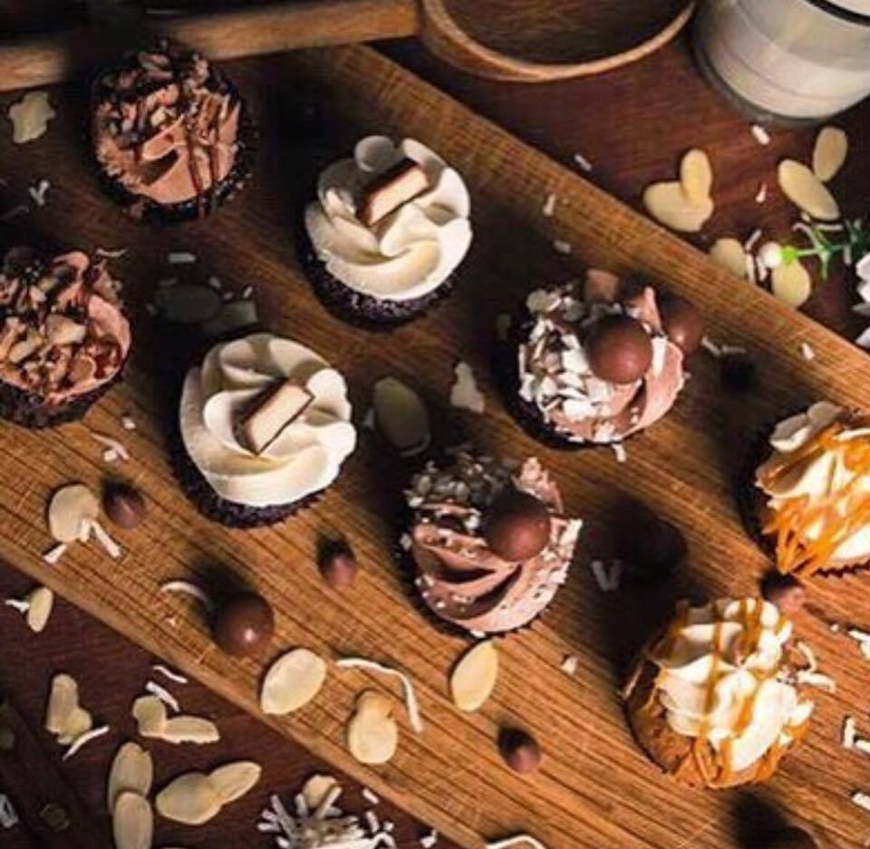
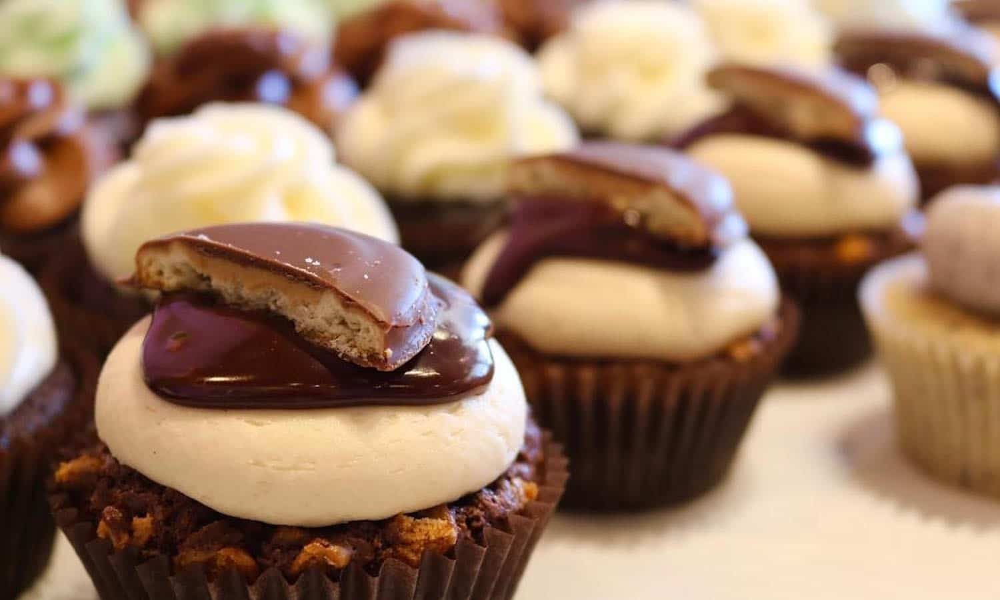

Whenever one of my children reaches a milestone, I become hopelessly teary. Tears of joy? I don’t think so. My tears are for a moment so precious and fleeting that I fear it may be lost. It’s a confusing place in the sad-to-happy range that makes me strangely gloomy.
The cream-soda-and-raspberry cupcakes came out of such a bittersweet moment. They were created last year to celebrate the 10th birthday of a Syrian refugee making her way across Europe. The girl, called Amal, which means hope in Arabic, was actually an 11-foot-tall puppet. Her makers wanted to bring to life the experience of millions of displaced children by creating a live art event called “The Walk.” They set Amal on a 5,000-mile journey, all the way from near the Turkish-Syrian border to Manchester, England, walking through more than 70 cities. Wherever she went, Amal was greeted by crowds of children and adults, eager to see her, shake her hand and offer her company.
   When Amal reached London, I approached a group of local pastry chefs and asked them to join me in creating a giant birthday cake made out of individual cupcakes, all with different flavors. On a sunny Sunday last October, dozens of kids came to the Victoria and Albert Museum to celebrate with Amal, sing in Arabic, play and, the highlight, pick a cupcake. With all the celebration, Amal felt overwhelmed and overly emotional, so at some point, she went aside to rest, while the other kids carried on with the party — a touching moment familiar to many parents, and another illustration of how quickly happy can turn into unhappy. Gallery